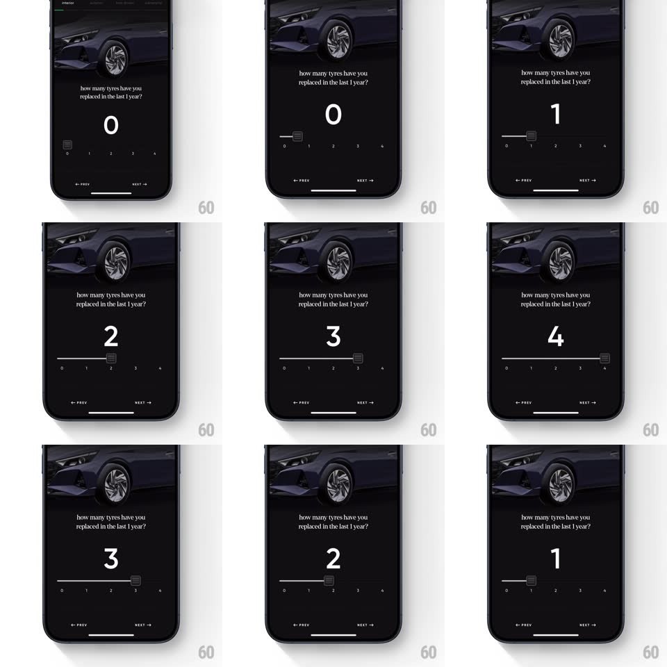

Media
Frame-by-frame

Rebuild this interaction 1:1: CRED's tyre-count slider - a dark premium screen asks "how many tyres have you replaced in the last 1 year?"; dragging a textured square handle along a 0-4 track snaps the huge numeral between values with a springy settle.

Rebuild this interaction 1:1: CRED's tyre-count slider - a dark premium screen asks "how many tyres have you replaced in the last 1 year?"; dragging a textured square handle along a 0-4 track snaps the huge numeral between values with a springy settle. ## Integration Integration: stack-agnostic spec - springs given as stiffness/damping, timed motions as duration + curve; map every value to your framework and animation library of choice. ## Scene Black screen under a moody car photo: serif question, a giant white numeral (0-4), a thin track with tick labels 0-4 and a small dark textured square handle, "< PREV" and "NEXT >" bottom corners. ## Motion spec Pattern: snapping slider with springy numeral. - Drag the handle: it tracks the finger 1:1 along the track; the numeral crossfades and counter-rolls (rises 8px) as the handle passes each tick. - Release: the handle snaps to the nearest tick (spring ~360/18 with a slight overshoot) with a haptic tick; the numeral settles with a small scale bounce (1 -> 0.92 -> 1, spring ~420/18). - The track's filled portion (left of handle) brightens; tick labels near the handle lift slightly toward white. - PREV/NEXT stay quiet gray; NEXT is the constant affordance - the slider is the input, not the nav. ## Calibration - Handle is a small square with a tread-like texture - CRED's tactile signature, not a round thumb. - The numeral is huge relative to the track (dominating the middle); values are ordinal counts only (0-4). ## Reduced motion Handle jumps to ticks on tap; numeral crossfades without bounce. ## Don't miss - The photo and question never move - all motion lives in the numeral and handle. - The track is hairline-thin; the visual weight comes from the numeral, not the control.